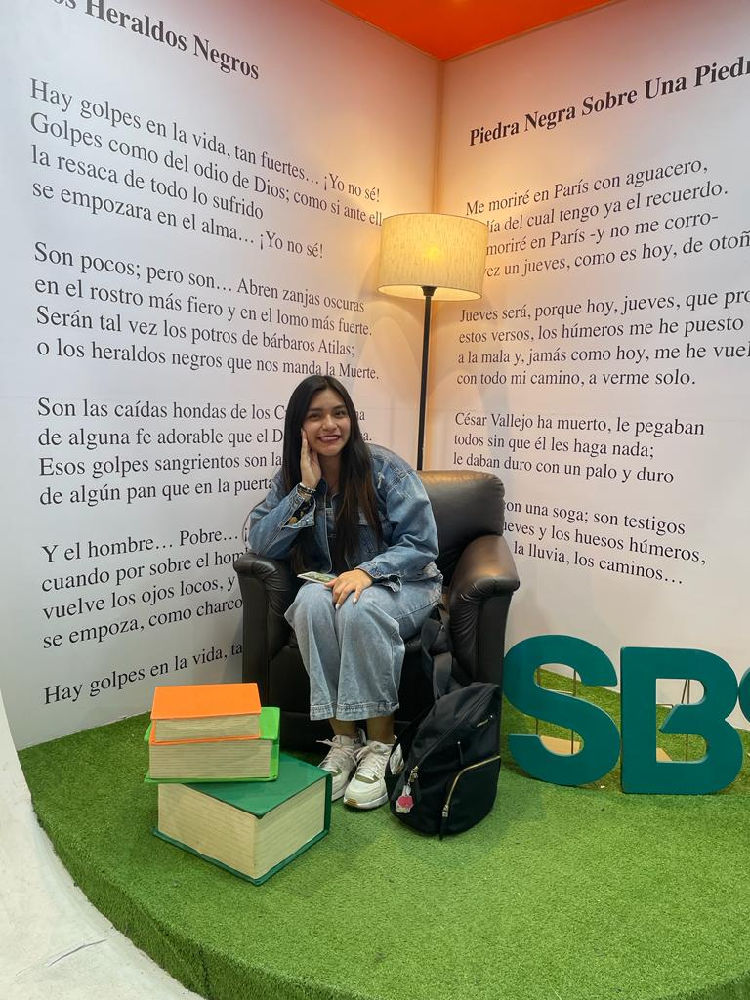

Sobre Mi
Mia Gaona "Comunicadora Audiovisual y Multimedia"
Hola! Soy Mia Gaona Anton, tengo 22 años y actualmente soy estudiante de la carrera de comunicaciones audiovisual y multimedia en el instituto "Toulouse Lautrec" y estoy en el 7to ciclo de la carrera. He participado en varios proyectos como documentales, videoclips y cortos estudiantiles. Me gusta mucho documentar mi vida como salidas con amigas o eventos a donde asisto, y las publicó en tiktok y en mis instagram. Mis grupos favoritos son BTS y Twice , es ahí de donde nace mi pasatiempo de grabar mis salidas y eventos a donde asisto. Tengo una perrita de 2 años que se llama Chiska, que fue y es lo mejor que me pasó en mi vida. Puedo pasarme el día tomándole fotos. Me gusta mucho leer libros tanto físicos como digitales, es como una escapada a los problemas habituales. Soy una persona atenta, responsable y súper proactiva, me gusta trabajar en equipo y ayudar a las personas a crear experiencias increíbles, y si esto es un poco sobre mí para que me puedan conocer un poco más.